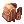

High Rank Hunts
Overview
High Rank Hunts are a part of the Monster Hunter content expansion, The Savage Coast.
In the Savage Coast, hunts are classified using a ranking system. The higher the number of stars a specific monster has, the higher its difficulty.
Parts from these monsters can be used to craft High Rank Shadow Gear, or exchanged into various pieces of powerful equipment.
Requirements
- A party consisting of exactly 5 members.
- Level 175+
- A fee of 50,000 Zeny divided equally between all party members.
- If any member of the party does not have the required zeny amount, the party will be unable to enter.
Departing on a Hunt
You can depart in High Rank Hunts by boarding The Wyvern and talking to the High Rank Agent.
To board the Airship, use the command "@go mh" or talk to the Warper NPC and select Special Areas > Monster Hunting.
On your first time on the Airship, you'll need to complete a brief tutorial where you will acquire a  Hunter's Satchel as well as the Interact and Roll skills.
- All buffs and debuffs are removed upon boarding the Airship.
- The party leader must talk to the High Rank Agent and select which monster the party will hunt.
- The party leader can either pay 50,000 Zeny to enter the Savage Coast.
- After completing the transaction, the party will be prompted to the front of the Airship.
- The instance lasts for 50 minutes, is repeatable and does not have a cooldown.
Inside the Savage Coast

The island is divided into three main biomes, each containing zones and camps:
- Beach: Fishing Camp - Zones 1, 2, 3 and 11.
- Forests: Main Camp and Forest Encampment - Zones 4, 5 and 6.
- Highlands: Mining Camp - Zones 7, 8, 9 and 10.
Your party will land on the island's Main Camp. From there, your party is free to explore the island for the instance duration.
- All buffs and debuffs are removed upon entering the island (except certain buffs, such as ASPD Potions).
- If anyone dies while inside the Savage Coast, they cannot be Resurrected by any means and will be automatically sent to the nearest encampment.
- In any camp, you can use Interact near the cauldron to drink a delicious soup and get fully healed.
- You can also access any Storage by talking to the Storage Chest.
- After five deaths, the party will fail the hunt.
- One party member dying twice is counted as two deaths.
- Two distinct party members dying are counted as two deaths.
- Any party member who got disconnected or changed characters while inside the Savage Coast is considered to have "died" and will add to the death count.
- After the fifth death occurred, the party will fail the hunt, and will be warped back to the Airship.
- If your party managed to take down the target, every party member will be able to Carve the Monster's body.
- All members are automatically warped back to their save point after one minute has passed.
- Every 9 successful hunts of the same Great Monster, you will receive a Special Carver, which allows you to carve a rare drop from said Monster.
- There is also a low chance you get a Special Carver at the end of any hunt, after defeating your target. Receiving a Special Carver this way does not reset the counter.
Note: Most loot obtained from High Rank Hunts are Character Bound, have zero weight and cannot be placed in shared Storages or Carts.
Expedition
Expeditions are the main way to obtain gathering materials without relying on a full party.
They are similar to regular High Rank Hunts and follow all requirements and restrictions present in those, but without a main hunting target. You can however choose to venture the island alone, or with up to 5 people.
Great Monsters cannot be found during expeditions. Ambient monsters, including Primals, can always be found at the island regardless.
Roles
Roles provide exclusive, Monster Hunting only skills that help in fulfilling a particular function in a party. You will get to choose a role during the Monster Hunter tutorial and can change them anytime.
There are four distinct roles, each with their own set of skills and limitations:
Alterations
During High Rank Hunts, a set of modifications takes place compared to regular Ragnarok Online content.
Main article: Monster Hunter Alterations
Rewards
High Rank Shadow Gear Crafting
Main articles: Shadow Gear, Shadow Gear Refinement
Fallen Angel Wings and Archangel Wings
Main article: Fallen Angel Wings and Archangel Wings
Monster Data
Two types of monsters can be encountered on the island.
- Ambient Monsters
- Great Monsters
While Ambient Monsters are always found on the island, each Great Monster is unique, has a set of exclusive skills and their own exclusive loot that can be used to either exchange or craft various rewards.
As such, a party must choose a specific Great Monster to hunt, each time they depart on a hunt. Current Great Monsters include:
1 Star
2 Stars
3 Stars
See Also
| Monster Hunting | ||
|---|---|---|
| Low Rank Hunts • High Rank Hunts | ||
| Hunting Mechanics | Rage • Hate • Skills • Alterations | |
| Player Roles | Tank • Damage • Healer • Utility | |
| Monsters |
1-Star Hunts | Garanth • Nyia |
| 2-Star Hunts | Garronath • Nysori | |
| 3-Star Hunts | Angnar • Zaedronath | |
| Unreleased | Sybaris • Vakaris • Hrungnir • Anko & Mako | |
| Regular Monsters | Ambient Monsters | |
| Rewards | Shadow Gear (Low Rank, High Rank (1/2-star), Angnar, Zaedronath) • Shadow Gear Refinement
Archangel Wings • Fallen Angel Wings • Ancient Hero • Temporal Armors • Violet Halo • Magical Booster • Bio Weapon Helms | |
| Gathering & Combinations | Mining • Fishing • Foraging • Combinations | |
| Lore | The Savage Coast • The Wyvern • Astrid • Seruel • Delphina • Sain • Will • Reidin Kurs | |